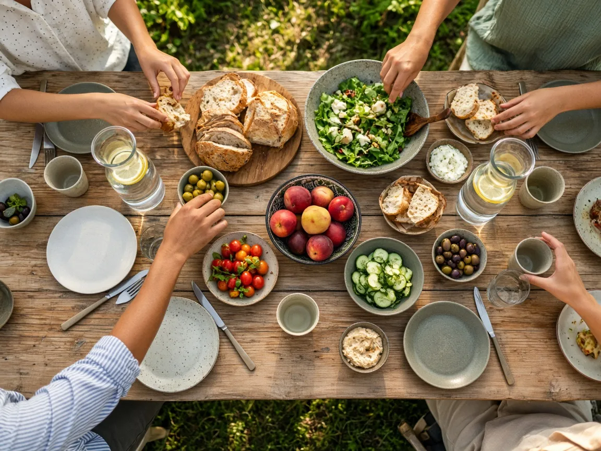
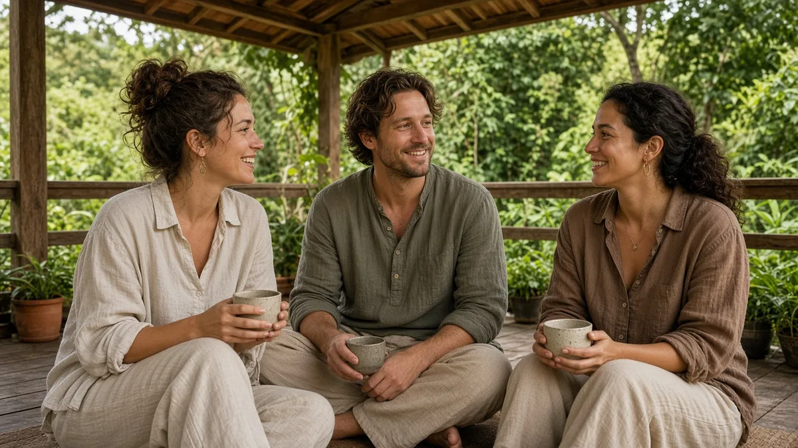
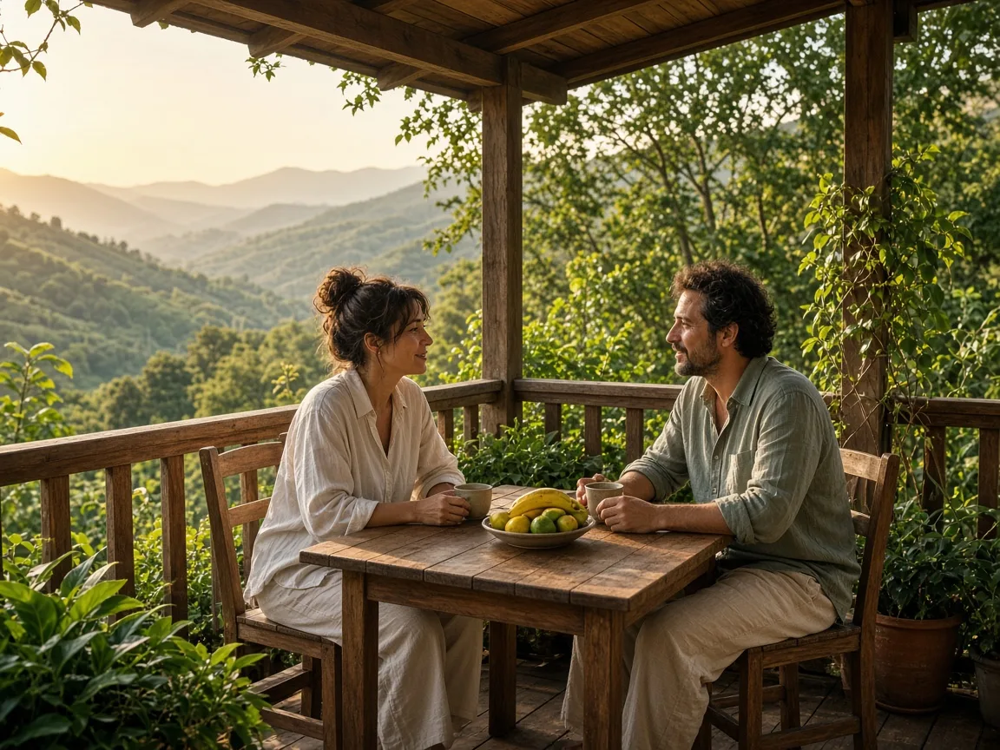
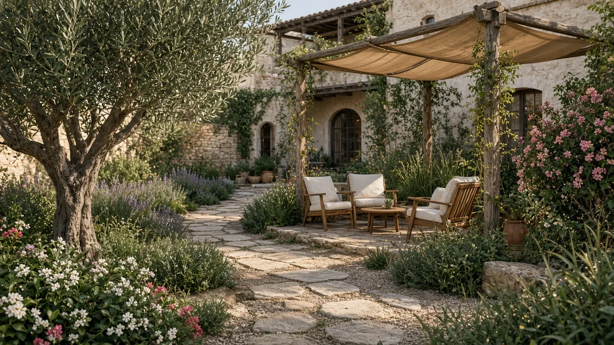
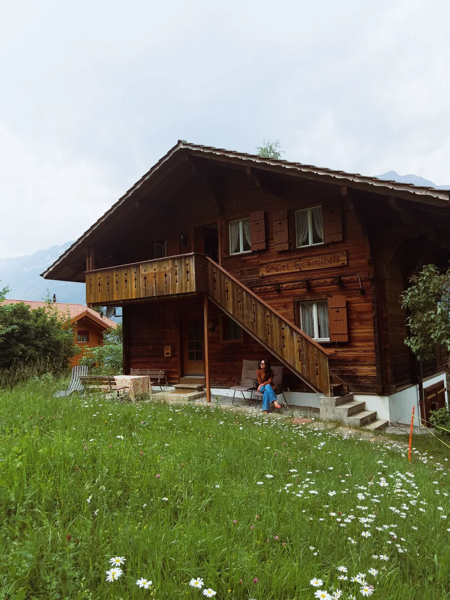
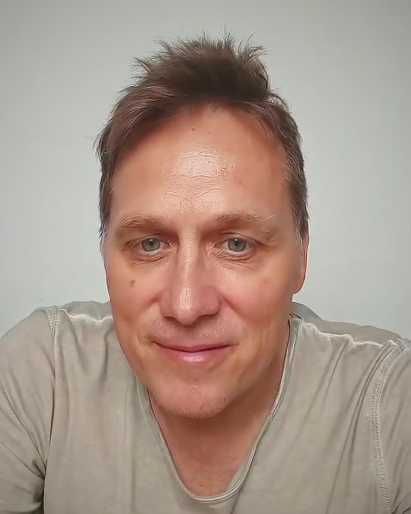

KI-generiertSo funktioniert es
Wir werden dir kleine Retreat Center mit 5 bis 40 Zimmern vorstellen, die Yoga, Fasten, Auszeit und Wellness anbieten.
Center ansehen
Retreat Center, Programm sachlich beschrieben. Ohne Glanz und ohne große Worte.
Anfragen
Drei kurze Fragen zeigen, ob es passt. Wenn nicht, auch gut.
Wir melden uns
Wir melden uns mit allen Details zu Buchung und Zahlung. Persönlich, ganz ohne Eile.
 Foto · J. Wolfert / Pexels
Foto · J. Wolfert / Pexels
 KI-generiert
KI-generiert
Zwei Wege zu deiner Auszeit
Feste Retreats mit einem klaren Programm oder eine Auszeit, die wir in Ruhe mit dir abstimmen. Du entscheidest.

Weg A
Retreat buchen
Feste Programme, feste Termine und klare Preise. Such dir aus, was zu dir passt, und buche ohne langes Hin und Her.
Oder beantworte drei kurze Fragen.
Retreat buchen
Weg B
Private Bespoke Retreat
Deine Termine, dein Tempo, die Begleitung, die du dir wünschst. Wir stellen es mit dir zusammen, persönlich und diskret.
Eine persönliche Anfrage, kein festes Programm.
Dein Bespoke Retreat planen
KI-generiertRuhige Orte, echte Momente
Kleine Center, offene Terrassen und Zimmer mit Blick ins Grün. Kein Lärm, kein Show. Menschen, die sich Zeit nehmen.
Hotels, Retreat Center und Eco-Lodges, die sich anfühlen wie zu Hause bei Freunden. Wir zeigen dir, wie es dort wirklich aussieht.
Orte zum Ankommen
Eco-Lodges, Hotelgärten, Zimmer mit Ausblick und Häuser im Grün. Symbolmotive, bis Nils vor Ort filmt.
 KI-generiert
KI-generiert
Eco-Lodge
Im Nebelgrün
Kleine Häuser, Gartenweg, Blick auf die Berge.
 Foto · Dmitry A.
Foto · Dmitry A.
Lodge
Im Bergwald
Holz, Ruhe und ein Dach unter Bäumen.

KI-generiertHotelgarten
Unter dem Olivenbaum
Steinwege, Schatten und ein Platz zum Sitzen.
 KI-generiert
KI-generiert
Zimmer
Mit Ausblick
Leinenbett, Holz und Grün vor dem Fenster.

Foto · D. TrindadeChalet
In der Wiese
Holzfassade, Balkon und offener Himmel.
 Foto · M. Bertelli
Foto · M. Bertelli
Terrasse
Über dem Garten
Holzunterstand und Grün bis zum Horizont.

Nils · eigenes Video„Ich möchte selbst hinfahren, vor Ort filmen und dir zeigen, wie es dort aussieht.“
Nils, Gründer von Gatherwynd. Ab Dezember unterwegs, auch in Peru.
Und wenn du jetzt gar nichts tun willst: Auch gut. Folge einfach mit.
Folge @Gatherwynd Foto · R. So / Pexels
Foto · R. So / Pexels